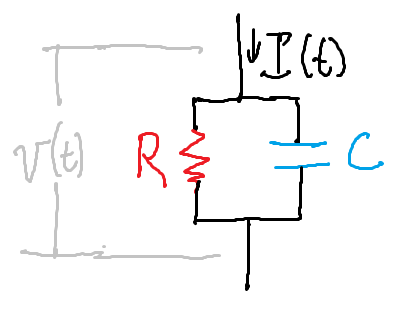

Basic Neuron Models#
The neuron is the most fundamental conceptual unit of neuromorphic computing. I will use the term “biological neuron” to refer to the neurons in our brain and “neuron” to refer to the artificial neurons. These artificial neurons can be simulated in software (as will be the case in this tutorial) or might be represented in hardware on a neuromorphic chip.
Neurons Communicate Through Spikes#
In our brains, biological neurons (about 87 billion of them) are connected in complex networks. Biological neurons communicate with each other through spikes (also known as action potentials or nerve impulses). Spikes are short (about 2 milliseconds) electrical impulses that are transmitted between neurons through chemical signals.
We use the term “pre-synaptic” to refer to the neuron that is “sending” the spike and “post-synapctic” to refer to the neuron that is receiving the spike. Many pre-synaptic neurons might connect to a single post-synapctic neuron. Post-synaptic neurons can also connect back to pre-synaptic neurons, forming loops.
A simple set of low-level rules determine when neurons spike. In short, when the neuron’s potential energy (which it can build up through pre-synaptic neuron spikes) exceeds a threshold, a neuron spikes.
Leaky Integrate-and-Fire (LIF) Neurons#
“All models are wrong but some are useful”.
Rather than replicating the biological and chemical processes that take place in the brain, neuromorphic hardware simulates the basic operations of our brains. These simulations are not precise but they try to capture the important functional aspects.
One of the simplest models of neuron dynamics is the leaky integrate-and-fire (LIF) model. This model has gained widespread popularity because it behaves similarly to biological neurons, is relatively inexpensive to implement in hardware, and is conceptually straightforward.
The name “leaky integrate-and-fire” reveals the fundamental properties of these neurons. The post-synaptic neuron adds up (integrates) the inputs from the connected pre-synaptic neurons but its value decreases (leaks) over time. If the sum of those inputs reaches a minimum threshold, it fires.
Modeling LIF Neurons#
Let’s first try to understand roughly how LIF neurons behave. We will use a leaky bucket analogy (most LIF descriptions use a circuit representation but a bucket is easier to visualize).
First, imagine a the neuron as a bucket with a bottom made out of rubber. The more we fill up this bucket, the more the bottom sags under the weight of the water. The amount of water represents the “potential” of biological neurons, which is how close the neuron is to firing (lower numbers mean it is further away from firing).
Drag the slider below:
Now, imagine that we poke a small hole in the rubber bottom of this bucket. When we fill the bucket with water, it will slowly leak out of the hole in the bottom. If we add more water, the hole in the rubber expands and lets out more water. This leakiness represents the fact that in biological neurons, the membrane potential decreases over time without additional inputs.
Try clicking the “Add water” button below quickly and watch the speed at which the water leaks out of the bucket. Note how it leaks out much more quickly when the bucket is full than when it is empty.
Throughout these tutorials, we will ease into a mathematical notation to represent the state (status) and dynamics (change over time) of neurons. We will refer to the potential as \(v\) (for voltage). Because this potential changes over time, we will represent it as a function of time, \(t\):
\(v(t)\): The potential of the neuron (how full the bucket is) at time \(t\)
The speed at which water leaks out of our bucket is mathematically defined as how \(v(t)\) changes over time. We refer to the amount that \(v(t)\) is changing at time \(t\) as \(v'(t)\) (pronounced “v prime of t”):
\(v'(t)\): The rate of change of \(v(t)\) at time \(t\).
When it is negative (\(v'(t) < 0\)), we are losing water (for example, this is what happens as our water leaks out).
When it is positive (\(v'(t) > 0\)), we are adding water (for example, this is what happens when we click the “add water” button).
Conceptually, \(v'(t)\) depends on a few values:
The amount of incoming water being added at time \(t\) (as in: are we pressing the “Add water” button?), which we will refer to as \(I(t)\)
How full the bucket is (remember that our water leaks out faster if the bucket is more full), which we already called \(v(t)\)
How the hole grows in relation to the amount of water (how “stretchy” the hole is), which we will refer to as \(\tau\)
The size of the hole (which we will leave fixed so won’t refer to by any variable)
We are going to use a formula for that satisfies all of these constraints:
A more detailed derivation of this is given in the optional “Circuit Model” section at the end of this page. Let’s focus on how “stretchy” the hole is (\(\tau\)). Our water will leak out faster (meaning \(v'(t)\) is more negative) for lower values of \(\tau\). When you press the button below, it will add water to all three buckets (each with different values of \(\tau\)):
\(\tau = 500\):
\(\tau = 1000\):
\(\tau = 3000\):
The Circuit Model (Optional)
The Circuit Model
Above, we modeled our neuron using the analogy of buckets and water. However, the “standard” way of introducing the LIF model is with a resistor-capacitor (RC) circuit, like the one below:

In this circuit, \(I(t)\) represents the amount of current coming into the neuron. \(R\) represents the resistance of a resistor in parallel with a capacitor (with capacitance \(C\)). Our potential, \(v(t)\), represents the potential difference between both ends of our circuit.
The total amount of current that will flow through the circuit (\(I(t)\)) is the amount that flows through the resistor (which we’ll call \(I_{R}(t)\)) plus the amount that flows through the capacitor (which we’ll call \(I_C(t)\)):
We can use some circuit equations to put this in terms of \(v(t)\), \(R\), and \(C\):
From Ohm’s law: \(I_R(t) = \frac{v(t)}{R}\)
For the capacitor, the current is: \(I_C(t) = Cv'(t)\)
This gives:
If we use \(\tau_{rc}\) as a replacement for \(RC\) and use \(I_2(t)\) as a replacement for \(RI(t)\) we get:
This equation is exactly what we have above(1), with different names (using \(I_2(t)\) instead of \(I(t)\) and \(\tau_{rc}\) instead of \(\tau\)).
Firing#
When the water reaches the top of the bucket, we are going to say that the neuron “fired”. This represents the fact that once the potential reaches a “firing threshold”, the neuron fires (or triggers an “action potential”). We call that firing threshold \(v_{th}\). So in other words, our neuron will fire when \(v(t) \ge v_{th}\).
After this happens, the neuron enters a “refractory period” where its potential resets and the neuron cannot fire. Now, when the bucket fills to the top, it will change color to indicate that the neuron “fired” and the bucket is in its refractory period. Try filling the bucket below by adding water:
Summary#
Neurons are the fundamental building blocks of Spiking Neural Networks (SNNs)
We will use a popular model (approximation) of neuron dynamics, called the Leaky Integrate and Fire (LIF) model
In the LIF model, the neuron has a potential (\(v(t)\)) that represents how close the neuron is to firing
We refer to the rate of change of this potential as \(v'(t)\) (“v prime of t”). It depends on:
The energy being added (\(I(t)\))
A time constant (\(\tau\))—higher values of \(\tau\) mean that \(v'(t)\) is closer to zero (in the bucket analogy, the water leaks out slower for higher values of \(\tau\))
The potential energy itself (\(v(t)\))—the more positive \(v(t)\) is, the more negative \(v'(t)\) will be (in the bucket analogy, the water leaks out faster when the bucket is more full).
When the potential is greater than some threshold (\(v(t) \ge v_{th}\)), our neuron will fire
Resources#
The Neuronal Dynamics Book (Ch) 1.3 contains much more detail on neuron models